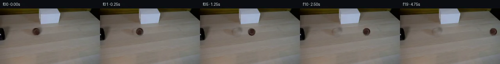

![首帧]()

Round 00
2026-11-05T10:21:13.410707+00:00像素候选变化代码 +190/−0inspection 更新
pixels 627e2206f2153da7 · code 954bbd969fd67f77
查看本轮 generate.py 真实 diff
--- previous/generate.py +++ current/generate.py @@ -0,0 +1,190 @@ +#!/usr/bin/env python3 +"""Generate the 20-frame PixelWorld continuation using local pixel operations.""" + +from pathlib import Path +import hashlib + +import cv2 +import numpy as np +from PIL import Image, ImageDraw + +import artifact_io + + +ROOT = Path(__file__).resolve().parent +SOURCE = ROOT / "first_frame.png" +W, H, N = 256, 144, 20 +START_CX, START_CY = 93.7, 60.0 +BALL_RADIUS = 9.8 + + +def smoothstep(edge0, edge1, x): + q = np.clip((x - edge0) / (edge1 - edge0), 0.0, 1.0) + return q * q * (3.0 - 2.0 * q) + + +def make_clean_plate(source): + """Remove the original ball/contact shadow with a small local inpaint.""" + yy, xx = np.mgrid[:H, :W] + # The extra lower extent covers the source contact shadow as well as the ball. + ellipse = ((xx - START_CX) / 12.7) ** 2 + ((yy - 60.4) / 12.0) ** 2 + mask = (ellipse <= 1.0).astype(np.uint8) * 255 + # OpenCV expects BGR. TELEA supplies a smooth local continuation of the wood. + bgr = cv2.cvtColor(source, cv2.COLOR_RGB2BGR) + plate_bgr = cv2.inpaint(bgr, mask, 4.0, cv2.INPAINT_TELEA) + plate = cv2.cvtColor(plate_bgr, cv2.COLOR_BGR2RGB) + + # Suppress the faint circular inpaint boundary while keeping source texture. + soft = cv2.GaussianBlur(mask, (0, 0), 2.4).astype(np.float32) / 255.0 + soft = np.clip(soft * 1.08, 0.0, 1.0)[..., None] + return np.clip(source * (1.0 - soft) + plate * soft, 0, 255).astype(np.uint8) + + +def extract_ball(source, plate): + """Extract a feathered circular ball sprite and infer edge foreground color.""" + yy, xx = np.mgrid[:H, :W] + # The source ball is almost circular, with about one pixel of antialiasing. + radius = np.hypot((xx - START_CX) / 1.01, yy - START_CY) + alpha = 1.0 - smoothstep(8.65, 10.35, radius) + alpha[radius > 10.35] = 0.0 + + a = alpha[..., None] + denom = np.maximum(a, 0.34) + foreground = (source.astype(np.float32) - plate.astype(np.float32) * (1.0 - a)) / denom + foreground = np.clip(foreground, 0, 255) + + # Fill transparent pixels from a stable brown so resampling never pulls black in. + core = radius < 7.0 + fallback = np.median(source[core], axis=0).astype(np.float32) + foreground[alpha < 0.04] = fallback + return foreground.astype(np.float32), alpha.astype(np.float32) + + +def transformed_sprite(foreground, alpha, cx, cy, angle_deg): + """Rotate around the original center and translate in one resampling pass.""" + matrix = cv2.getRotationMatrix2D((START_CX, START_CY), angle_deg, 1.0) + matrix[0, 2] += cx - START_CX + matrix[1, 2] += cy - START_CY + fg = cv2.warpAffine( + foreground, + matrix, + (W, H), + flags=cv2.INTER_CUBIC, + borderMode=cv2.BORDER_CONSTANT, + borderValue=(0, 0, 0), + ) + a = cv2.warpAffine( + alpha, + matrix, + (W, H), + flags=cv2.INTER_CUBIC, + borderMode=cv2.BORDER_CONSTANT, + borderValue=0, + ) + return np.clip(fg, 0, 255), np.clip(a, 0.0, 1.0) + + +def add_contact_shadow(frame, cx, cy): … diff truncated; 103 more lines …